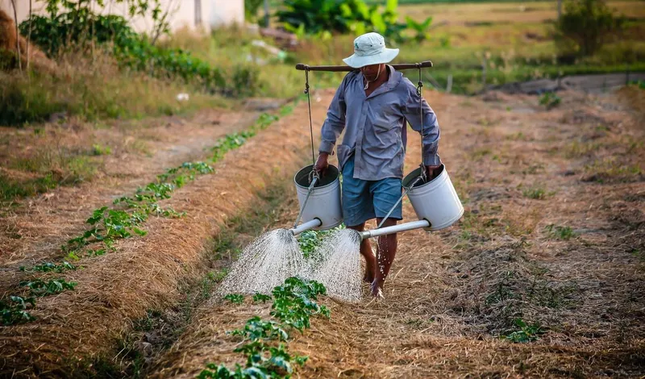
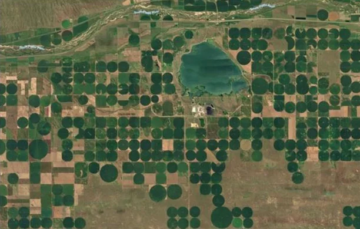
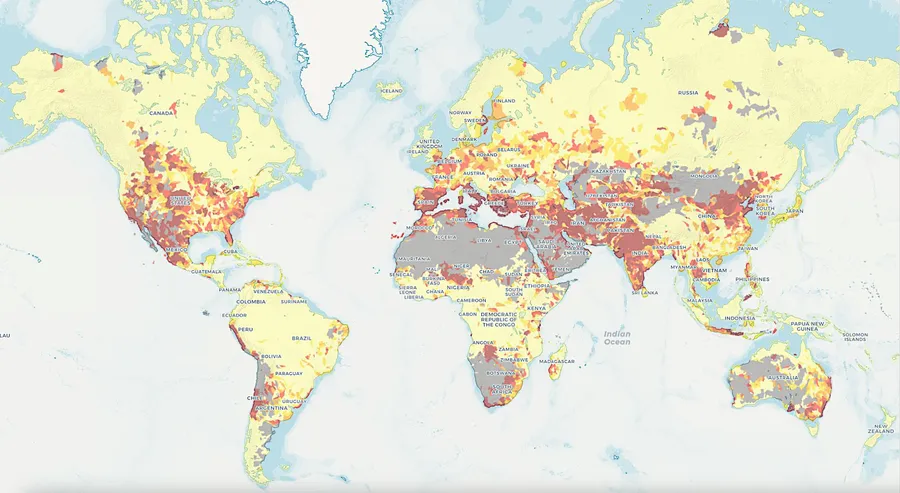
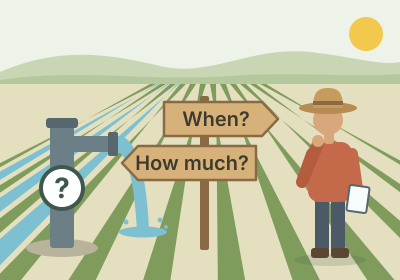

Ehsan Jalilvand · Hydrology & Earth observation
My research on the water cycle.
I study how water moves through landscapes, how people reshape its journey, and what satellites reveal about both.
A closer look · Agricultural water use
Why irrigation matters
Feeding a growing world depends on irrigated farms, and irrigated farms depend on water that is already running short.


Green circles are irrigatedGreen = irrigated

The gap: no one knows how much water each farm uses
- Few withdrawals are measured. Only 36% of US irrigation wells have a flow meter (Foster et al., 2020), and the UN names “not enough data” among the main obstacles to its water goal (UN-Water, 2023).
- Models assume, farmers decide. Models switch irrigation on at a fixed soil-water deficit; farmers go by calendars, what they see in the field and what their neighbours do.
Satellites revisit every field every few days. My work asks how much of the irrigation signal they can recover, and at what scale.
Seeing irrigation at different scales
Illustration: one landscape at four resolutions. The irrigation signal that a coarse pixel averages away becomes visible at field scale.
My irrigation studies
Every answer revealed another question
It began with a signal that rainfall could not explain. Each study since answered a question the last one raised, so the work ran backward, from how much to when to where, and now comes full circle to how much with all three.
Essential reading
The research landscape
Studies from across the field that use satellite data or Earth system models to find where, when and how much farms irrigate. A small agent looks for new papers every week, and I review each one before it is added.
Loading studies
| Status | Questions answered | Data & code |
|---|
Related agricultural work
Collaborations on crops, yield and agricultural water management.